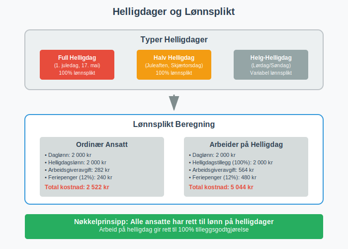
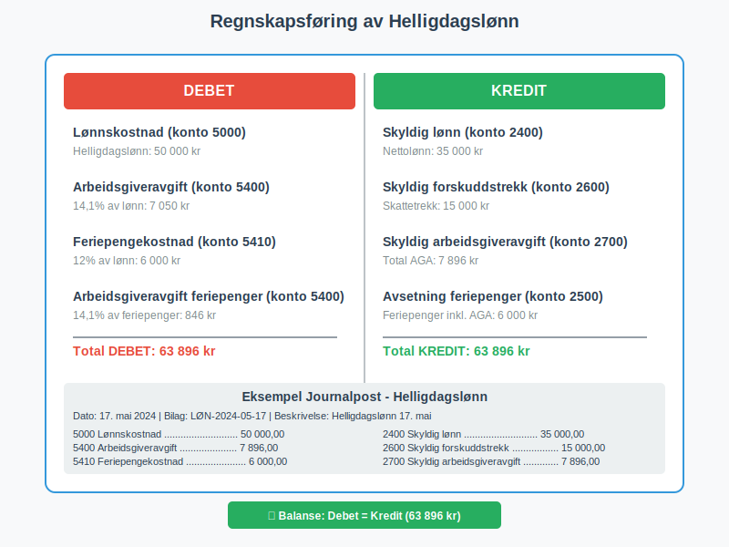
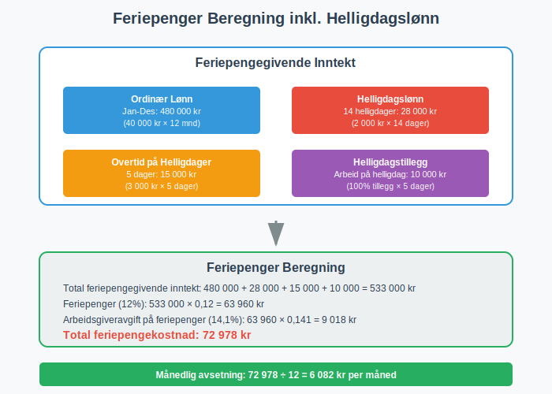
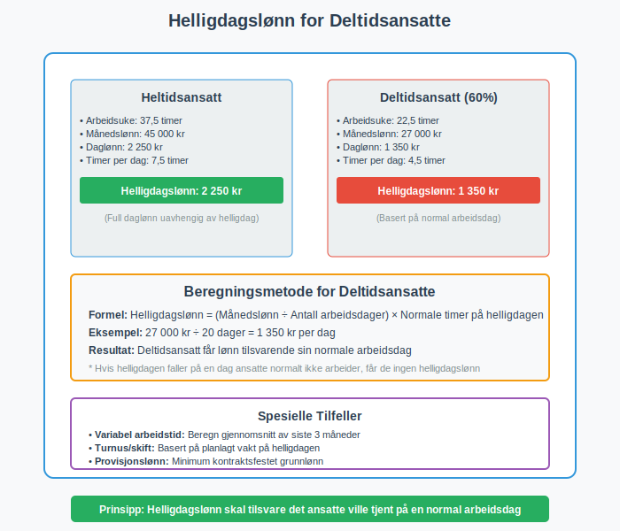
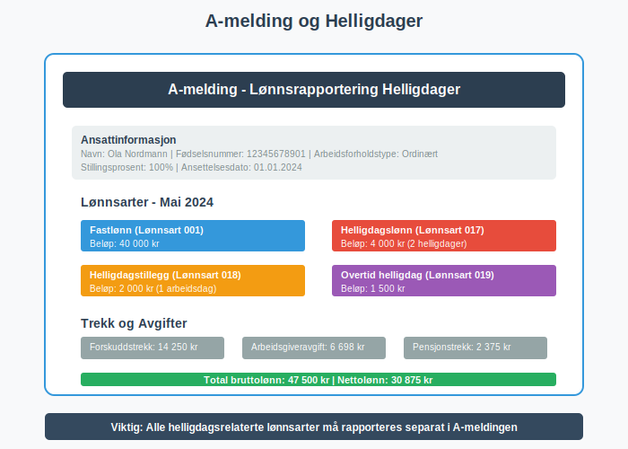
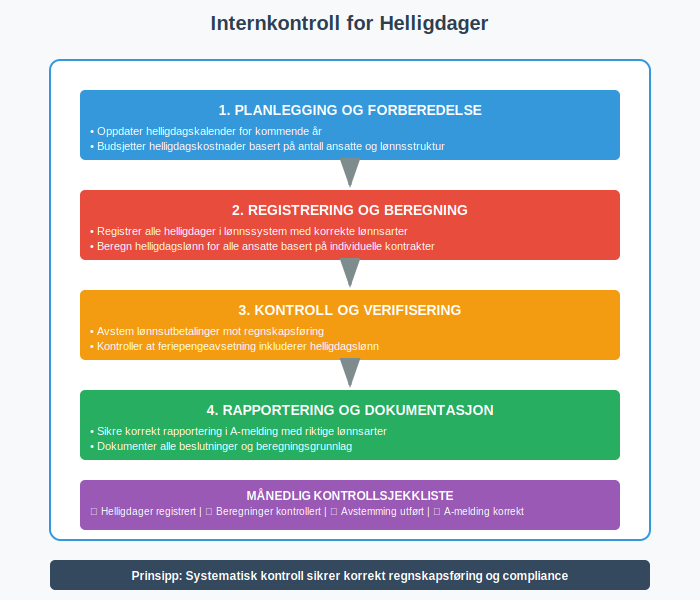
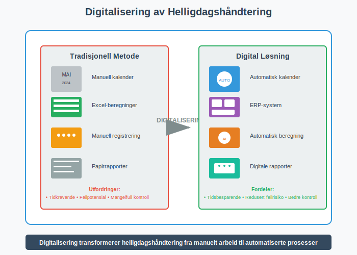
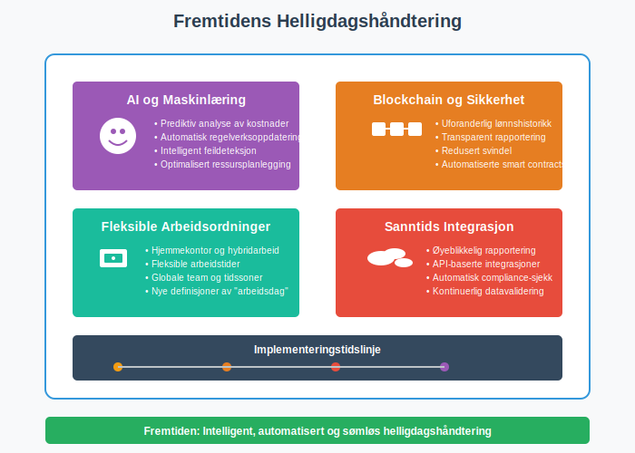

Helligdager representerer en kompleks regnskapsmessig utfordring for norske bedriftseiere, hvor juridiske krav, lønnsforpliktelser og regnskapsføring må håndteres korrekt. Denne artikkelen gir en omfattende analyse av hvordan bedrifter skal behandle helligdager i regnskapssammenheng, fra feriepenger til komplekse avsetninger og rapportering.
For å sikre korrekt håndtering av alle lønnsrelaterte forpliktelser, er det essensielt å følge god regnskapsskikk og etablerte regnskapsprinsipper for personalrelaterte kostnader.
Seksjon 1: Juridisk Rammeverk for Helligdager
Det norske lovverket etablerer klare rammer for hvordan helligdager skal håndteres i arbeidsforhold, med direkte konsekvenser for regnskapsføring og bokføring.
1.1 Arbeidsmiljølovens Bestemmelser
Arbeidsmiljøloven § 10-12 regulerer helligdager og gir arbeidstakere rett til fri på offentlige helligdager. Dette skaper regnskapsmessige forpliktelser for arbeidsgivere som må planlegges og bokføres korrekt.

Hovedprinsipper:
- Arbeidstakere har rett til lønn på helligdager selv om de ikke arbeider
- Arbeid på helligdager gir rett til tilleggsgodtgjørelse (minimum 100% tillegg)
- Bedrifter må planlegge for disse kostnadene i budsjettering
1.2 Oversikt over Norske Helligdager
For korrekt regnskapsplanlegging må bedriftseiere ha oversikt over alle offentlige helligdager:
| Helligdag | Dato | Type | Regnskapsmessig Betydning |
|---|---|---|---|
| Nyttårsdag | 1. januar | Fast | Full lønnsplikt, ingen arbeid |
| Skjærtorsdag | Variabel | Bevegelig | Halv arbeidsdag, full lønnsplikt |
| Langfredag | Variabel | Bevegelig | Full lønnsplikt, ingen arbeid |
| 1. påskedag | Variabel | Bevegelig | Full lønnsplikt, ingen arbeid |
| 2. påskedag | Variabel | Bevegelig | Full lønnsplikt, ingen arbeid |
| Arbeidernes dag | 1. mai | Fast | Full lønnsplikt, ingen arbeid |
| Grunnlovsdag | 17. mai | Fast | Full lønnsplikt, ingen arbeid |
| Kristi himmelfartsdag | Variabel | Bevegelig | Full lønnsplikt, ingen arbeid |
| 1. pinsedag | Variabel | Bevegelig | Full lønnsplikt, ingen arbeid |
| 2. pinsedag | Variabel | Bevegelig | Full lønnsplikt, ingen arbeid |
| Juleaften | 24. desember | Fast | Halv arbeidsdag, full lønnsplikt |
| 1. juledag | 25. desember | Fast | Full lønnsplikt, ingen arbeid |
| 2. juledag | 26. desember | Fast | Full lønnsplikt, ingen arbeid |
| Nyttårsaften | 31. desember | Fast | Halv arbeidsdag, full lønnsplikt |
Seksjon 2: Regnskapsføring av Helligdagslønn
Korrekt regnskapsføring av helligdagsrelaterte kostnader krever forståelse av både løpende kostnader og avsetninger.
2.1 Løpende Regnskapsføring
Helligdagslønn behandles som ordinære lønnskostnader, men krever spesiell oppmerksomhet i lønnskjøringen:

Typisk bokføring:
Debet: Lønnskostnad (konto 5000-5099)
Kredit: Skyldig lønn (konto 2400)
Kredit: Skyldig arbeidsgiveravgift (konto 2700)
Kredit: Skyldig forskuddstrekk (konto 2600)
For mer om konto for forskuddstrekk, se Konto 2600 - Skyldig forskuddstrekk.
2.2 Avsetninger for Fremtidige Helligdager
Bedrifter må vurdere om det er nødvendig å sette av midler for kjente fremtidige helligdager, spesielt når regnskapsåret ikke sammenfaller med helligdagsfordelingen.
Avsetningskriterier:
- Forpliktelsen er sannsynlig (helligdagen vil inntreffe)
- Beløpet kan måles pålitelig
- Forpliktelsen stammer fra tidligere hendelser (ansettelsesforhold)
Seksjon 3: Feriepenger og Helligdager
Sammenhengen mellom feriepenger og helligdager er kompleks og krever nøye regnskapsmessig behandling.
3.1 Beregningsgrunnlag for Feriepenger
Feriepenger beregnes som 12% av feriepengegivende inntekt, som inkluderer lønn utbetalt på helligdager:

Feriepengegivende inntekt inkluderer:
- Ordinær lønn utbetalt på helligdager
- Tilleggsgodtgjørelse for arbeid på helligdager
- Overtidsbetaling på helligdager
- Bonuser og provisjoner knyttet til helligdagsarbeid
3.2 Regnskapsføring av Feriepengeavsetning
Månedlig avsetning av feriepenger må inkludere helligdagslønn:
Debet: Feriepengekostnad (konto 5400)
Kredit: Avsetning feriepenger (konto 2500)
Beregningseksempel:
- Månedslønn inkl. helligdagslønn: 50 000 kr
- Feriepengeavsetning: 50 000 × 12% = 6 000 kr
- Arbeidsgiveravgift på feriepenger: 6 000 × 14,1% = 846 kr
Seksjon 4: Spesielle Regnskapsmessige Utfordringer
Helligdager skaper flere komplekse regnskapsmessige situasjoner som krever spesiell oppmerksomhet.
4.1 Helligdager på Lørdager og Søndager
Når helligdager faller på helger, oppstår spesielle regnskapsmessige vurderinger:
- Lørdag/søndag-helligdager: Ingen ekstra lønnsplikt for 5-dagers arbeidere
- Skiftarbeidere: Kan ha lønnsplikt også på helger
- Regnskapsføring: Må reflektere faktisk lønnsplikt, ikke kalenderdato
4.2 Deltidsansatte og Helligdager
Deltidsansatte har rett til helligdagslønn basert på sin normale arbeidsdag:

Beregningsprinsipp:
- Helligdagslønn = (Månedslønn ÷ Antall arbeidsdager) × Normale timer på helligdagen
- Må bokføres individuelt for hver ansatt i ansattreskontro
4.3 Variabel Lønn og Helligdager
For ansatte med variabel lønn (provisjon, bonus) krever helligdagslønn spesiell beregning:
Beregningsmetoder:
- Gjennomsnitt av siste 3 måneder
- Gjennomsnitt av siste 13 uker
- Kontraktsfestet minimumslønn
Seksjon 5: Rapportering og Compliance
Korrekt rapportering av helligdagsrelaterte kostnader er kritisk for compliance med norske myndigheter.
5.1 A-melding og Helligdager
A-meldingen må inneholde korrekte opplysninger om helligdagslønn:

Viktige rapporteringselementer:
- Lønnsart: Spesifiser helligdagslønn som egen kategori
- Arbeidsforholdstype: Korrekt klassifisering av ansettelsesforhold
- Arbeidsgiveravgift: Beregnet på helligdagslønn
- Forskuddstrekk: Basert på total utbetaling inkl. helligdagslønn
5.2 Skattemessig Behandling
Skattemessig behandles helligdagslønn som ordinær lønnsinntekt:
- For arbeidstaker: Skattepliktig som lønnsinntekt
- For arbeidsgiver: Fradragsberettiget som lønnskostnad
- Timing: Kostnadsføres når lønnsforpliktelsen oppstår
Seksjon 6: Internkontroll og Kvalitetssikring
Etablering av robuste kontrollsystemer for helligdagsrelaterte kostnader er essensielt for korrekt regnskapsføring.
6.1 Kontrollrutiner
Månedlige kontroller:
- Verifiser at alle helligdager er korrekt registrert i lønnssystemet
- Kontroller beregning av helligdagslønn for alle ansatte
- Sikre korrekt avstemming mot lønnsutbetalinger
- Verifiser feriepengeavsetning inkluderer helligdagslønn

6.2 Dokumentasjon og Sporbarhet
Korrekt dokumentasjon av helligdagsrelaterte beslutninger:
- Arbeidsplaner: Dokumenter normal arbeidstid på helligdager
- Lønnsvedtak: Beslutninger om tilleggsgodtgjørelse
- Beregningsgrunnlag: Dokumentasjon av variable lønnsberegninger
- Avsetningsvurderinger: Begrunnelse for regnskapsmessige avsetninger
Seksjon 7: Digitalisering og Automatisering
Moderne teknologi kan betydelig forenkle håndtering av helligdagsrelaterte regnskapsoppgaver.
7.1 Integrerte Lønnssystemer
ERP-systemer med integrert lønnsmodul kan automatisere:
- Automatisk registrering av helligdager i arbeidskalender
- Beregning av helligdagslønn basert på individuelle kontrakter
- Generering av regnskapsposter for helligdagsrelaterte kostnader
- Automatisk rapportering til A-melding
7.2 Kvalitetskontroll gjennom Teknologi

Teknologiske kontrollmekanismer:
- Automatiske varsler: Påminnelser om kommende helligdager
- Validering: Kontroll av beregninger mot forhåndsdefinerte regler
- Rapportgenerering: Automatiske rapporter for ledelseskontroll
- Integrasjon: Kobling mellom lønn, regnskap og rapportering
Seksjon 8: Bransjespesifikke Utfordringer
Ulike bransjer har spesielle utfordringer knyttet til helligdager som påvirker regnskapsføringen.
8.1 Detaljhandel og Servicenæringer
Detaljhandel har ofte behov for bemanning på helligdager:
- Tilleggsgodtgjørelse: Minimum 100% tillegg for helligdagsarbeid
- Planlegging: Ekstra kostnader må budsjetteres
- Regnskapsføring: Separate kontoer for ordinær og tilleggslønn
8.2 Produksjonsbedrifter
Kontinuerlig produksjon krever spesiell håndtering:
- Skiftarbeid: Komplekse beregninger for ulike skiftordninger
- Beredskapsvakter: Godtgjørelse for tilgjengelighet på helligdager
- Overtid: Kombinasjon av helligdags- og overtidstillegg
8.3 Offentlig Sektor vs. Privat Sektor
Forskjeller i regnskapsbehandling:
| Aspekt | Privat Sektor | Offentlig Sektor |
|---|---|---|
| Regnskapsstandard | NGRS/IFRS | KOSTRA/GKRS |
| Helligdagslønn | Lønnskostnad | Driftskostnad |
| Avsetninger | Etter regnskapsloven | Etter kommuneloven |
| Rapportering | A-melding | KOSTRA-rapportering |
Seksjon 9: Fremtidige Utviklingstrekk
Regnskapsbehandling av helligdager påvirkes av samfunnsmessige og teknologiske endringer.
9.1 Fleksible Arbeidsordninger
Hjemmekontor og fleksitid skaper nye utfordringer:
- Definisjon av arbeidsdag: Når gjelder helligdagslønn?
- Dokumentasjon: Bevis for faktisk arbeidstid
- Regnskapsføring: Nye kategorier for fleksible ordninger
9.2 Automatisering og AI
Kunstig intelligens kan revolusjonere helligdagshåndtering:

- Prediktiv analyse: Forutsigelse av helligdagskostnader
- Automatisk beregning: AI-drevet lønnsberegning
- Compliance-overvåking: Automatisk kontroll av regelverksetterlevelse
Seksjon 10: Praktiske Anbefalinger
For å sikre korrekt håndtering av helligdager i regnskapet, anbefaler vi følgende tilnærming:
10.1 Implementering av Best Practice
Trinnvis implementering:
- Kartlegging: Identifiser alle helligdagsrelaterte forpliktelser
- Systematisering: Etabler rutiner for beregning og bokføring
- Automatisering: Implementer teknologiske løsninger
- Kontroll: Etabler månedlige kontrollrutiner
- Oppdatering: Følg med på regelverksendringer
10.2 Nøkkelkontroller for Bedriftseiere
Månedlig sjekkliste:
- ✓ Alle helligdager korrekt registrert i lønnssystem
- ✓ Helligdagslønn beregnet for alle ansatte
- ✓ Feriepengeavsetning inkluderer helligdagslønn
- ✓ Arbeidsgiveravgift beregnet korrekt
- ✓ A-melding inneholder korrekte opplysninger
- ✓ Regnskapsposter stemmer med lønnsutbetalinger
10.3 Når Søke Profesjonell Hjelp
Indikatorer for ekstern bistand:
- Komplekse arbeidsordninger med mange ansatte
- Hyppige endringer i arbeidsstyrken
- Usikkerhet om regelverksfortolkning
- Behov for systemoppgradering eller implementering
For bedrifter som ønsker maksimal sikkerhet og compliance, kan det være aktuelt å engasjere et ARS (Autorisert Regnskapsførerselskap) som har spesialkompetanse på lønnsregnskap og personaladministrasjon.
Konklusjon
Helligdager representerer en betydelig regnskapsmessig kompleksitet for norske bedriftseiere, men med riktig kunnskap, systemer og rutiner kan disse utfordringene håndteres effektivt. Nøkkelen ligger i å forstå det juridiske rammeverket, etablere robuste regnskapsrutiner, og implementere teknologiske løsninger som sikrer korrekt beregning og rapportering.
Ved å følge prinsippene i denne artikkelen, kombinert med løpende oppdatering på regelverksendringer og investering i moderne lønnssystemer, kan bedriftseiere sikre både compliance og kostnadseffektivitet i håndteringen av helligdagsrelaterte forpliktelser.
For kontinuerlig oppdatering og dypere innsikt i spesifikke regnskapstemaer, anbefaler vi å følge med på endringer i bokføringsloven og etablere gode rutiner for internkontroll som sikrer kvalitet i regnskapsføringen.